Kasaoka, Okayama: things to do, food and stays
Kasaoka · Okayama
Kasaoka
Highlighted on the Okayama map.
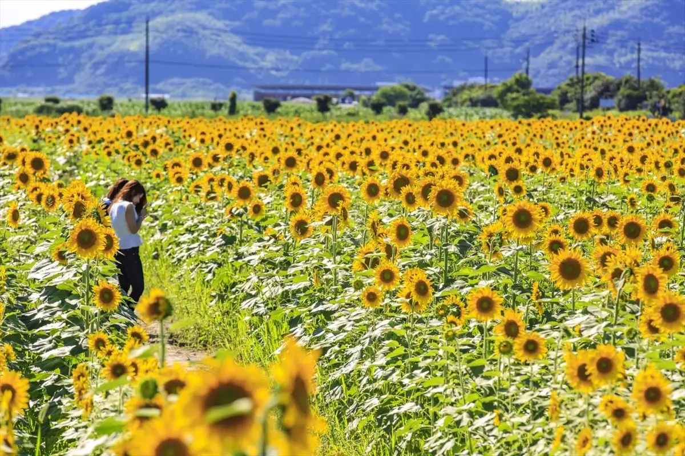
Stay
辻与旅館
Tsuji Yo Ryokan
笠岡 潮待ちHOTEL
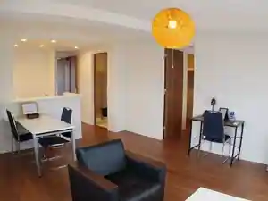
Kasaoka Shiomachi Chi HOTEL
Inn in Kasaoka with business travelers.
笠岡グランドホテル
Kasaoka Grand Hotel
Hotel in Kasaoka with business travelers.
海社ゲストハウス
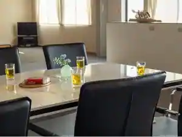
Umi Sha Guesthouse
Ｉｌｅ ｄ’ｏｒ Ｃａｆｅ＆Ｇｕｅｓｔｈｏｕｓｅ
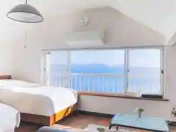
Ile d or Cafe&Guesthouse
Dining
中華そば いではら
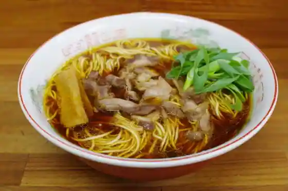
Chuka Soba Idehara
中華そば 坂本
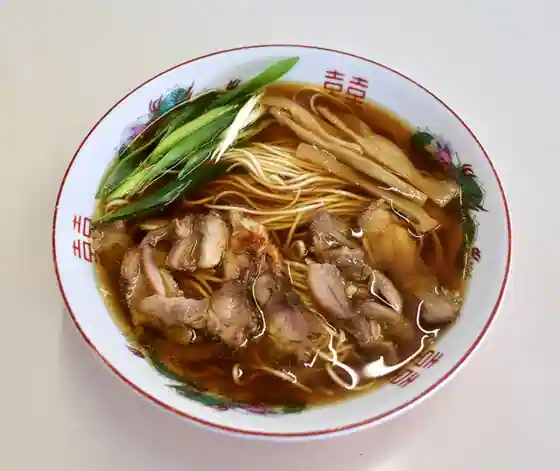
Chuka Soba Sakamoto
シャコ丼の店
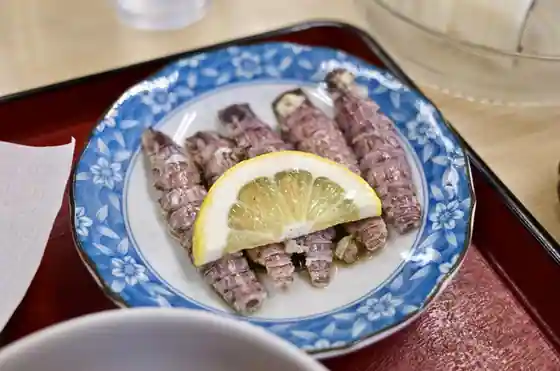
Shako Donburi No
麺屋 千鳥
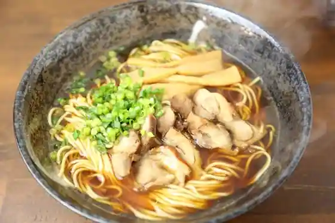
Men Ya Chidori
happy 笠岡店
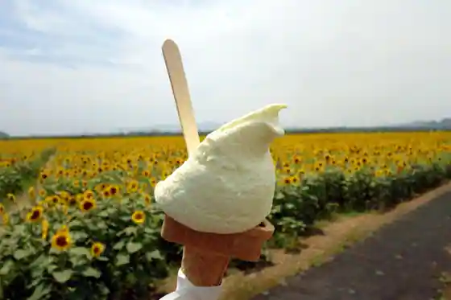
happy Kasaoka
中華そば 鶴亀
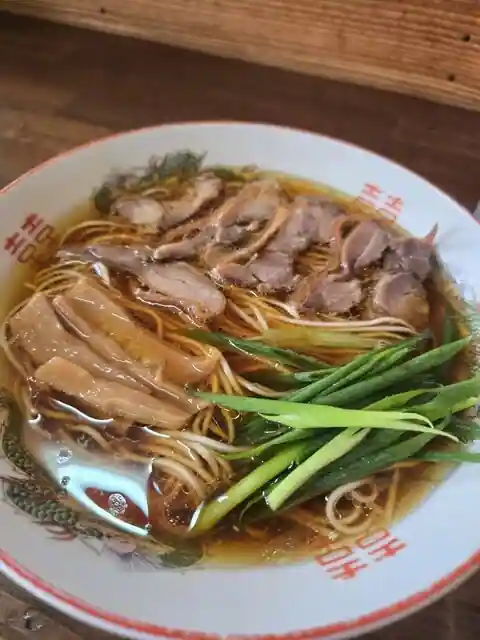
Chuka Soba Tsurukame
とんぺい
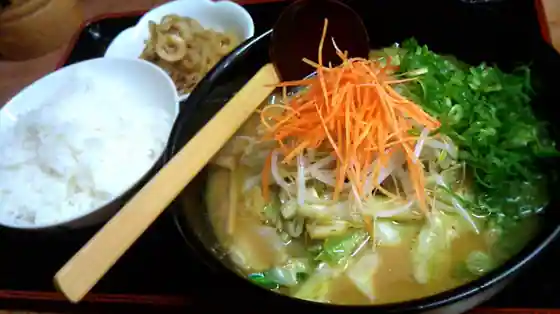
Tonpei
かさおか食堂
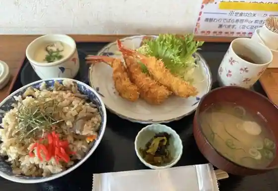
Kasaoka Shokudo
たかたのたまご
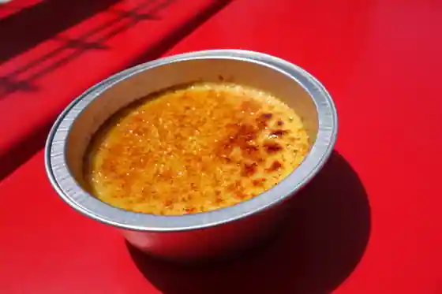
Takatanotamago
そば切り 潮凪庵
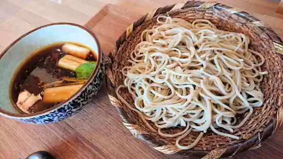
Soba Kiri Shio Nagi Iori
別館 茶寮 お多津
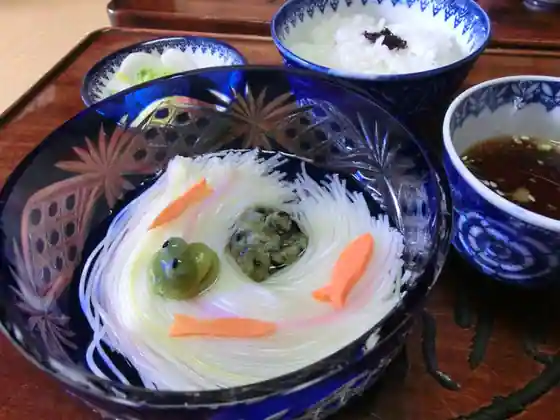
Bekkan Charyo O Tatsu
寿司割烹 郷味
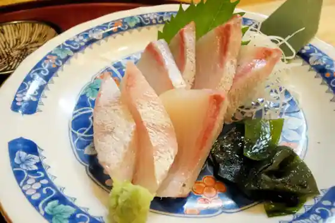
Sushi Kappo Sato Aji
味処栄清丸
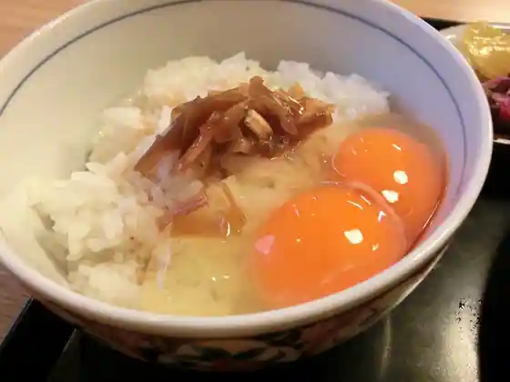
Ajidokoro Sakae Kiyomaru
酒々波々
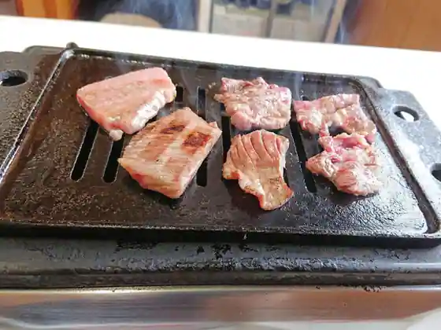
Sake (Kurikaesi) Nami (Kurikaesi)
瀬戸内海鮮料理 若よし
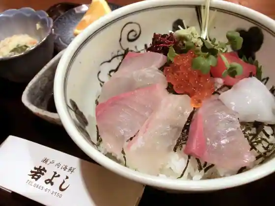
Setonaikai Sen Ryori Jaku Yoshi
マル栄 中華そば
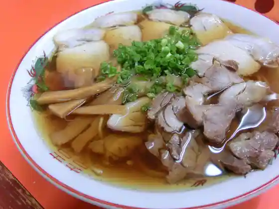
Maru Sakae Chuka Soba
アシェット
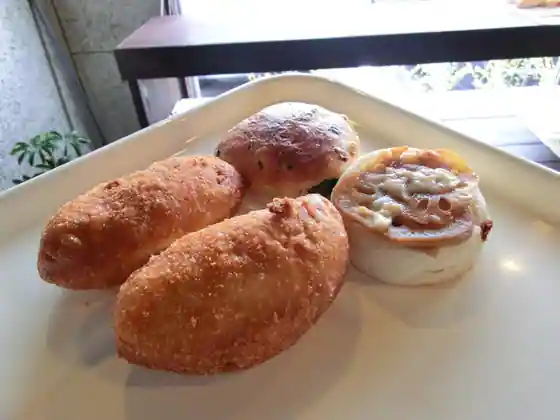
Ashietto
TAITAI家
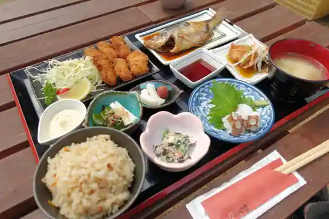
TAITAI Ie
中華そば しだはら
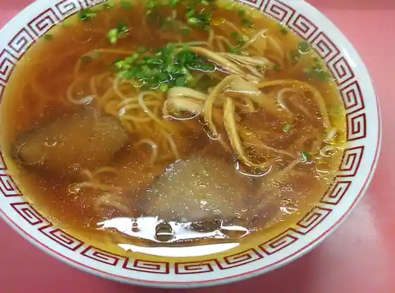
Chuka Soba Shidahara
笠岡ベイファーム
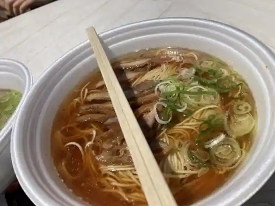
Kasaoka Beifamu
一笑懸麺
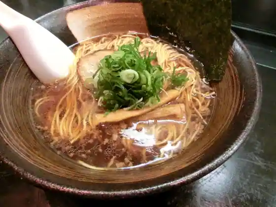
Issho Ken Men
ひまわりカフェ
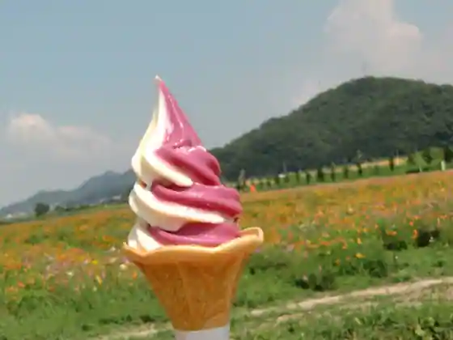
Himawari Cafe
八楽笑
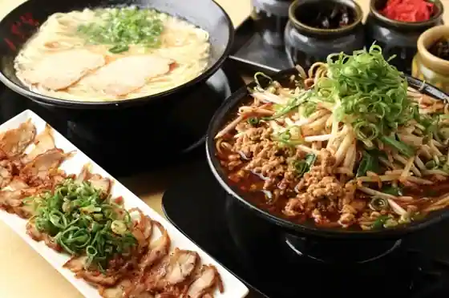
Hachi Raku Warai
龍
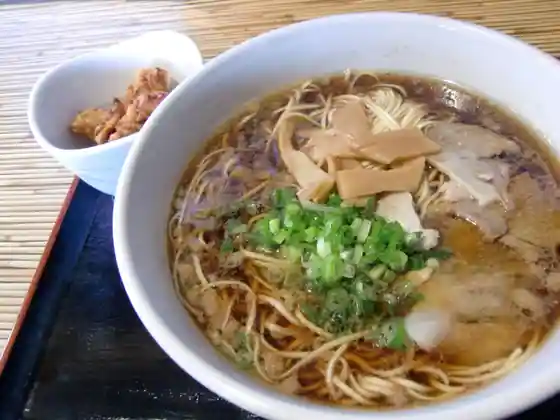
Ryu
Sights
Kasaoka Wan Kantaku Chi no Hanahata
Kasaoka Ritsu Kabutogani Museum
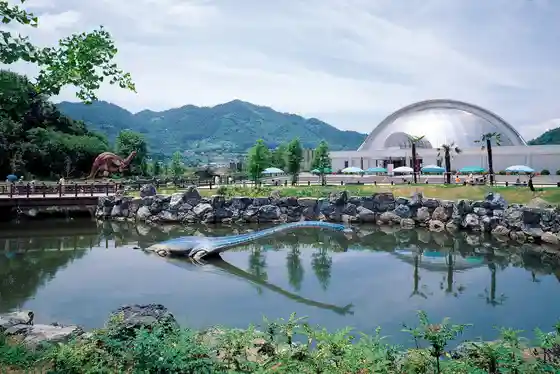
Roadside Station Kasaoka Bei Farm
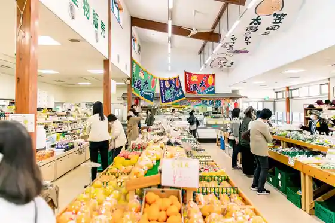
Kojo Yama Park
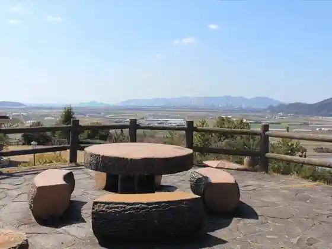
Shiroishi Shima